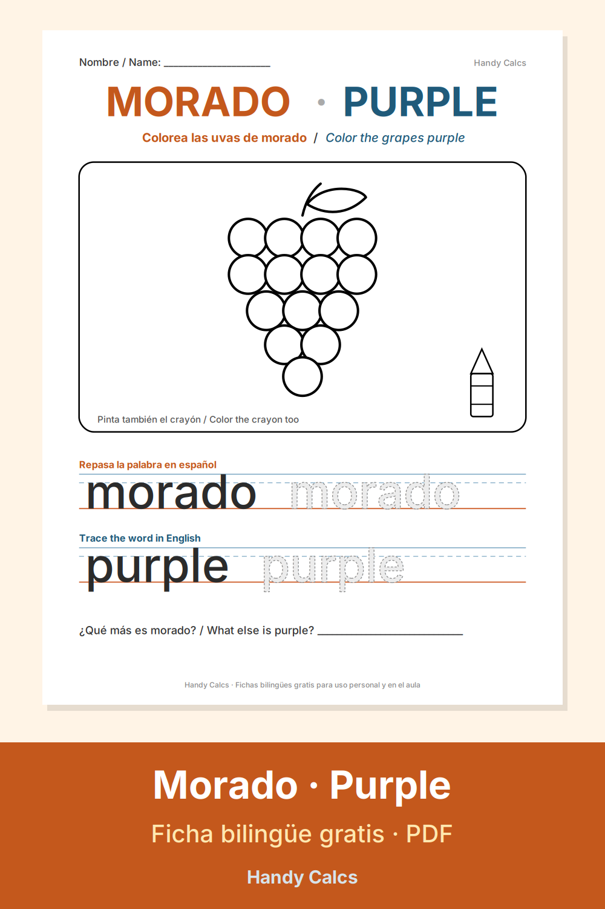
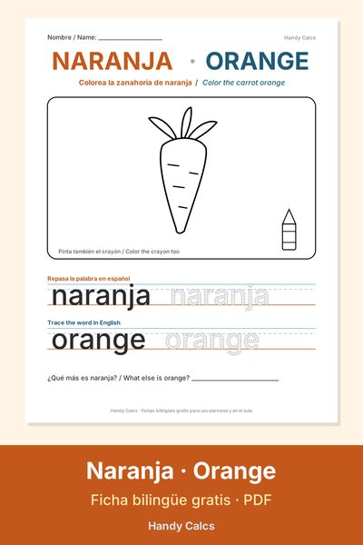
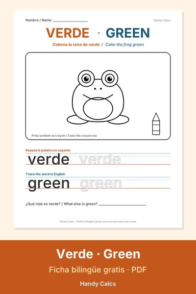
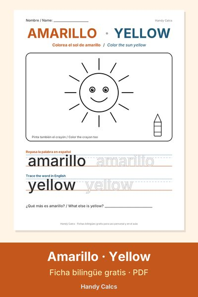
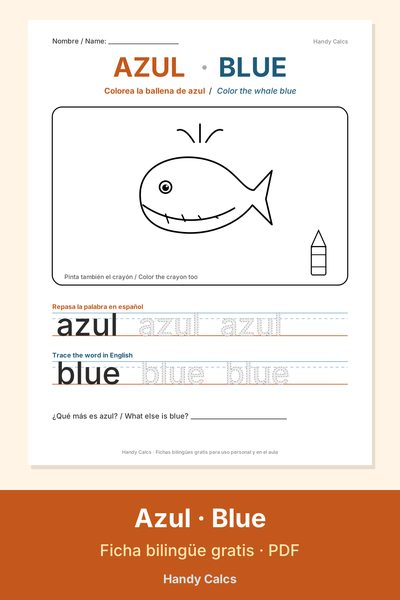
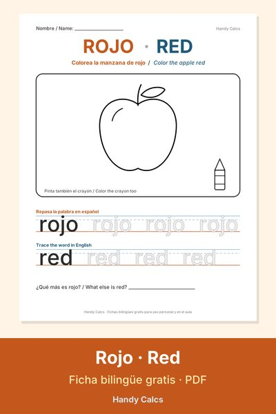

Ficha bilingüe del color morado (purple) para niños

Ficha para aprender los colores en español e inglés: colorear el dibujo y repasar las palabras. Para niños de 3 a 7 años. PDF gratis tamaño carta.
Ideas para usarla
- Lean juntos la palabra en voz alta en los dos idiomas.
- Repasen las letras grises siguiendo la línea punteada.
- Colorear al final, como premio.
Más fichas de colores

Ficha bilingüe del color naranja (orange) para niños
Ficha bilingüe del color verde (green) para niños
Ficha bilingüe del color amarillo (yellow) para niños
Ficha bilingüe del color azul (blue) para niños
Ficha bilingüe del color rojo (red) para niños